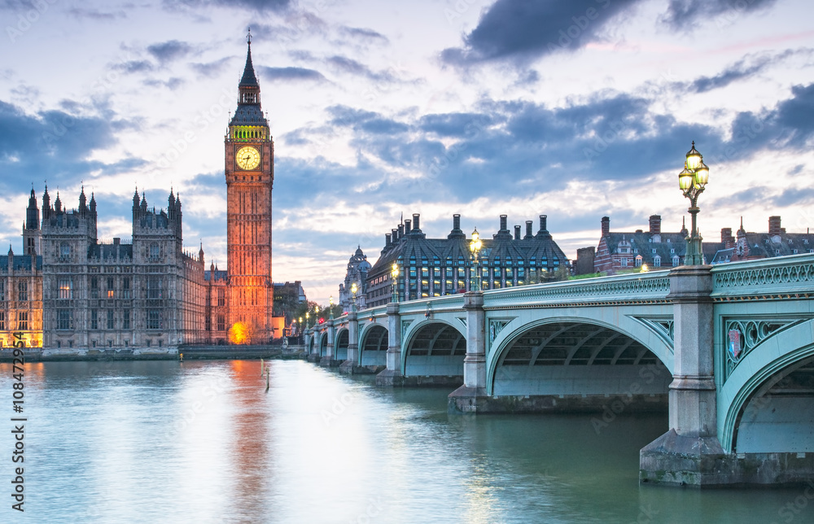

Sobre a Inglaterra
A Inglaterra é um país rico em história, cultura e inovação. Com sua monarquia histórica e cidades vibrantes, é um destino inesquecível para todos. A Inglaterra também é conhecida por sua contribuição significativa para as artes, literatura e ciências, além de ser uma potência econômica global.
Com marcos como o Big Ben, a Torre de Londres e o Palácio de Buckingham, a Inglaterra oferece uma experiência única para os turistas. O país também é famoso por suas universidades, como Oxford e Cambridge, e seu sistema de transporte público, que conecta as cidades de forma eficiente.

História

Cultura